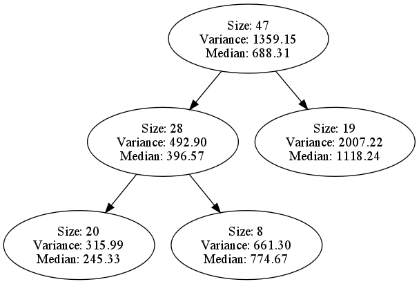
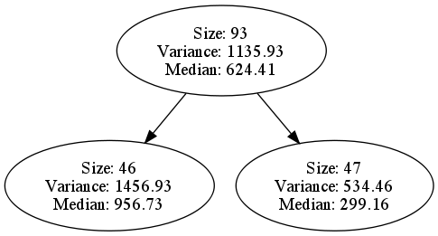
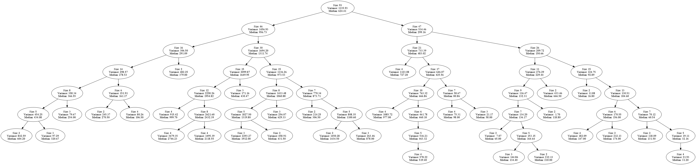
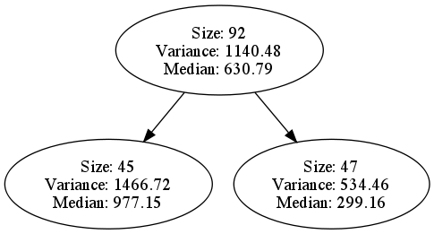

Monday, September 20th
This is a look at what the Oracle is currently doing. Tree looks a little small considering we re-compass after each era, let's investigate and see what's going on here.
PARAMS:
s, the number of pairs to sample from = 1
m, the number of instances to take from each pair = 4

NASA93 turns into 10 eras of sizes: {10, 10, 10, 10, 10, 10, 10, 10, 10, 3}.
The problem appears to be in re-compass, which is destroying or either not altering the compass tree fed to it. Currently, re-compass will be applied to any leaf node with size > min-cluster-size which is typically 4.
Re-compass wasn't altering the structure of the tree sent to it, this should be resolved. Here is a small tree that I know should re-compass into a large structure.

Both children should be expanded, here is the result.

Now, back to the original experiment. Since the tree wasn't restructuring, the Oracle's performance would have been completely shot.

Group of base tests with s=2, m=4 to see if the re-compassing affected the rig's performance. Having issues with small sets like cocomo81, maxwell, and sdr.
ALBRECHT
ORACLE WIN: 2 TIE: 0 LOSS: 18 MDMRE: 3.1857
COMPASS WIN: 18 TIE: 0 LOSS: 2 MDMRE: 1.7250
DESHARNAIS-ALL
ORACLE WIN: 9 TIE: 0 LOSS: 11 MDMRE: 1.0632
COMPASS WIN: 5 TIE: 12 LOSS: 3 MDMRE: 1.0403
NASA93
ORACLE WIN: 0 TIE: 7 LOSS: 13 MDMRE: 5.9288
COMPASS WIN: 20 TIE: 0 LOSS: 0 MDMRE: 3.9902
FINNISH
ORACLE WIN: 0 TIE: 0 LOSS: 20 MDMRE: 2.6542
COMPASS WIN: 20 TIE: 0 LOSS: 0 MDMRE: 1.3412
COCOMO81
ORACLE WIN: 2 TIE: 0 LOSS: 18 MDMRE: 8.7865
COMPASS WIN: 18 TIE: 0 LOSS: 2 MDMRE: 6.2931
SDR
ORACLE WIN: 0 TIE: 6 LOSS: 14 MDMRE: 5.0879
COMPASS WIN: 20 TIE: 0 LOSS: 0 MDMRE: 1.8728
MAXWELL
ORACLE WIN: 1 TIE: 0 LOSS: 19 MDMRE: 1.6631
COMPASS WIN: 18 TIE: 2 LOSS: 0 MDMRE: 1.3492

Now, we'll just focus on nasa93. Here's an era by era chart of the Oracle's performance over time.
ERA: 0 vs. TREE: 1 --> MDMRE: 1.70766
ERA: 1 vs. TREE: 2 --> MDMRE: 1.0380751
ERA: 2 vs. TREE: 3 --> MDMRE: 4.7928762
ERA: 3 vs. TREE: 4 --> MDMRE: 1.5214523
ERA: 4 vs. TREE: 5 --> MDMRE: 1.5312512
ERA: 5 vs. TREE: 6 --> MDMRE: 3.036756
ERA: 6 vs. TREE: 7 --> MDMRE: 2.9092143

Encountered a problem with a division by zero error in the remove-from-tree function. This function works as intended -- I think the problem is occuring in some special case. I already accounted for there being one instance in the node that's being updated. Here is an example of removing one item from the small tree pictured above. Every part of the tree is updated all the way down.

Running a test in super verbose mode to attempt to find out how it fails, 30 minutes in and nothing so far.
In the mean-time -- here's a baseline using randomly selected pairs for era by era performance from the Oracle for nasa93.
ERA: 0 vs. TREE: 1 --> MDMRE: 1.9827645
ERA: 1 vs. TREE: 2 --> MDMRE: 13.232056
ERA: 2 vs. TREE: 3 --> MDMRE: 11.526922
ERA: 3 vs. TREE: 4 --> MDMRE: 2.974511
ERA: 4 vs. TREE: 5 --> MDMRE: 4.9138403
ERA: 5 vs. TREE: 6 --> MDMRE: 3.2930477
ERA: 6 vs. TREE: 7 --> MDMRE: 1.92969149
Now we're looking at an hour for these results.
Further meantime, I'm now linking the git repository to the svn repository.